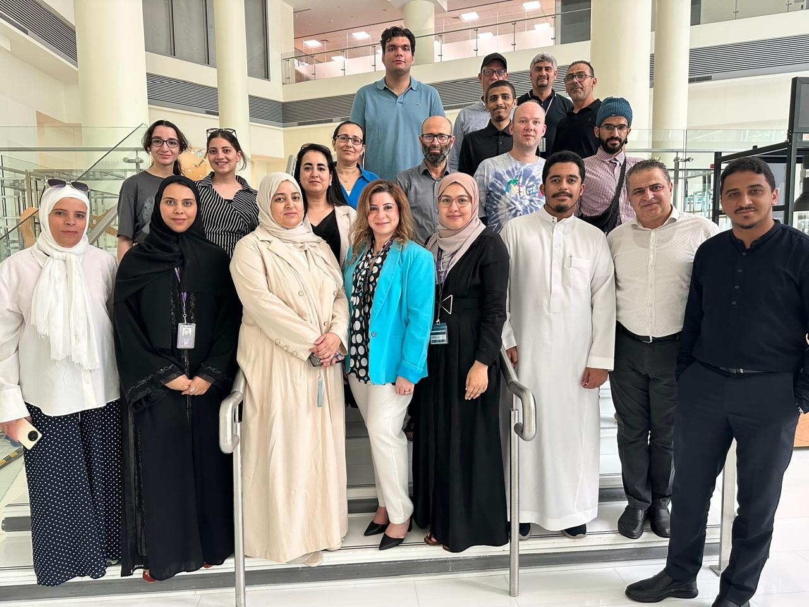
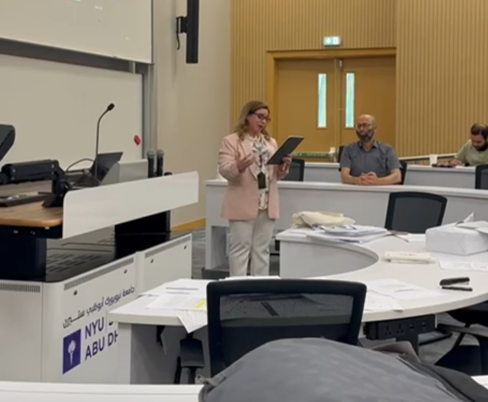

Depth over breadth
Each session stays with one olympiad theme until its central idea becomes clear and transferable. Themes include Fermat's little theorem, multiplicative orders, and projective geometry.

Training the Trainers · Est. 2024
A professional development academy for secondary school mathematics educators across the MENA region. We equip teachers with the strategies and pedagogical craft to nurture mathematical talent at the olympiad level while bringing the beauty of mathematics back into the classroom.
The Academy
The Math Olympiad Trainer Academy is a comprehensive professional development program designed to enhance the skills of secondary school mathematics teachers in olympiad problem solving across the Middle East and North Africa.
Our work equips educators with effective strategies to foster deep mathematical understanding, nurture talent, engage students, and renew the attractiveness of mathematics through reasoning and discovery.
The Academy was developed with funding from SITE, which was part of the NYU Abu Dhabi Research Institute, and in academic partnership with MIMS, the Mediterranean Institute for the Mathematical Sciences.

What guides us
The Academy was built on a simple conviction: a single well prepared teacher reaches thousands of students across a career. Our pedagogy follows from that.
Each session stays with one olympiad theme until its central idea becomes clear and transferable. Themes include Fermat's little theorem, multiplicative orders, and projective geometry.
We move from theorem to worked example, then name the hidden method. Once the method has a name, problems become cleaner, more systematic, and easier to teach.
Mathematical exposition develops alongside pedagogy. Every cycle gives teachers careful LaTeX notes and clear language they can use in class.
A lasting working community connects teachers across the MENA region. Its members come from Tunisia, Morocco, Algeria, Mauritania, Egypt, Yemen, Qatar, and the UAE.
The Curriculum
Each academic year follows a coherent path through classical olympiad mathematics. Problems drive the work, and exposition makes each idea teachable.
i.
Algebra reveals the structure behind olympiad identities through inequalities, functional equations, and polynomials.
ii.
Geometry builds disciplined reasoning through careful diagrams, transformations, and synthetic or projective methods.
iii.
Number theory connects modular arithmetic with multiplicative order, Diophantine equations, and the theorems of Fermat and Euler.
iv.
Combinatorics develops inventive counting through graph theory, extremal reasoning, and the pigeonhole principle.
The Academy Year · 2025 to 2026
A guest coach leads each cycle through one or two related areas of olympiad mathematics. Live online sessions come with full written notes, and participant presentations close the cycle.
Mathematical work begins immediately with the first online session led by a coach.
Weekend sessions usually take place every two weeks in the late afternoon. The exact day reflects coach availability and time differences across participating MENA countries.
Every live session comes with a complete LaTeX document and a problem set in the Academy's Google Classroom.
A typical year contains approximately four cycles. Each cycle normally includes two to four sessions led by a coach, depending on the content and coach, followed by a separate teacher presentation session.
Each cycle closes with sessions led by participants. Teachers present a topic from the cycle to the cohort. They reason through proofs aloud, field questions, and bring the year's mathematics back to their own teaching voice.
The final cycle and its teacher presentations bring the recurring online program to a close around the middle of June.
Support and academic partnership
The Academy was developed with funding from SITE, which was part of the NYU Abu Dhabi Research Institute, and in academic partnership with MIMS, the Mediterranean Institute for the Mathematical Sciences.
SITE
Stability, Instability and Turbulence, providing development funding through its position within the NYU Abu Dhabi Research Institute
MIMS
Mediterranean Institute for the Mathematical Sciences, the academic partner, with strategic liaison led by Dr. Sadok Kallel
Knowledge Hub
The Knowledge Hub preserves the Academy's teaching methods and participant exercises. Its historical material places that work within a longer mathematical tradition.
Methods Library
Each card explains one method through a precise statement and worked example. A teaching note addresses the point where students often stumble.
Open the Atlas →Historical Profiles
Each mathematician in the Continuum has a sourced profile. Together, these pages provide the evidence behind the narrative history.
Read the profiles →Teaching Materials
Exercise sets from Cycles I through IV preserve the mathematical work of each session for future study and teaching.
Browse the problems →Teacher presentations
Every Year Two cycle closed with participant presentations. Teachers explained proofs and method choices in their own teaching voice while responding to questions from the cohort.
See the presentation record →IMO 2025 Training Camp
This record documents the training camp held before the 2025 International Mathematical Olympiad and the people who shaped its mathematical work.
Read about the camp →Year Two in figures
Administrative records establish the scale and continuity of the completed Academy year from 2025 to 2026. Participant reflections trace how the mathematics moved from learning into teaching and further development.
Explore the evidence topography and anonymous teacher reflections →

Whether you are preparing students for national olympiads or simply want to teach mathematics with greater depth, the Academy is open to you.